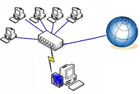
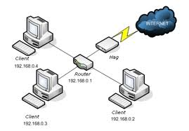

| NOME | IMMAGINE | DEFINIZIONE | SVANTAGGI/SVANTAGGI |
| RETE PUNTO A PUNTO |  | Una rete punto a punto e' realizzata unendo ogni device della rete con un cavo |
VANTAGGIO: 1-Ogni nodo puo parlare direttamente con tutti gli altri
2-E'una rete molto veloce SVANTAGGI: 1-Il costo della rete e molto alto 2- I device speciali cioe con tante schede di rete quanti sono i nodi della rete |
| RETE A STELLA | .jpg) | Una rete a stella funziona collegando tutti i device a un punto centrale. Questo nodo centrale
puo essere un computer speciale o un hub o uno switch | VANTAGGI: 1- E'una rete semplice da realizzare 2-E' molto economica
SVANTAGGI: 1-Nel caso si rompa il nodo centrale la rete non funziona piu 2-tutte le comunicazioni passano nel nodo centrale se non e'ben programmato lascia vedere
i dati agli altri nodi |
| RETE AD ANELLO | .jpg) | La rete ad anello prevede che ogni nodo sia collegato ad altri due insieme fanno un anello | VANTAGGI: 1-E' una rete semplice 2-E' una rete semplice da espandere SVANTAGGI: 1-La rottura di un nodo blocca la comunicazione 2-Per parlare tra 2 nodi potrebbe essere necessario passare per gli altri nodi della rete |
| RETE A BUS | .jpg) | Tutti i nodi sono collegati tra di loro per mezzo di un bus, cioe un canale che possiede due estremita e n accessi ad esso. Le due estremita sono chiuse con dei terminatori. |
VANTAGGI: 1-E' una rete semplice da realizzare 2-E' economica SVANTAGGI: 1-La rottura di un terminatore puo bloccare la rete 2-La rottura del bus blocca tutta la comunicazione |
| RETE AD ALBERO | .jpg) | E' una rete in cui sono definite delle gerarchie cioe un nodo puo essere padre di altri nodi. Ogni nodo e collegato ad almeno un altro nodo che puo vedere pezzi di rete maggiori |
VANTAGGI: 1-E' adatta a gestire piccoli gruppi che devono condividere risorse 2-La rottura di un nodo consente ad altri pezzi di rete di funzionare SVANTAGGI: 1-E' una rete complicata da realizzare e mantenere 2-L' aggiunta di un nodo puo richiedere configurazioni complesse |
| NOME | IMMAGINE | DEFINIZIONE | SVANTAGGI/SVANTAGGI |
LAN | | Local Area Network:e una rete di piccole dimensioni normalmente copre una stanza o piccoli edifici |
VANTAGGI: 1-E una rete semplice 2-E facilmente estendibile SVANTAGGI: 1-E adatta solo per piccole aree 2-Ha una sicurezza limitata |
| MAN | | Metropolitan Area Network: E'una rete che copre parti di una citta. E' normalmente composta da sottoreti CAN | VANTAGGI: 1-Consente di condividere risorse aziendali anche tra sedi diverse 2-E'una rete sicura SVANTAGGI: 1-Rete complicata e costosa 2-Non e sempre possibile realizzarla |
| CAN | .jpg) | Campus Area Network:E'una rete piu grande e complessa di una LAN copre normalmente piu edifici vicini ed e'composta da sottoreti LAN |
VANTAGGI: 1-Normalmente e' piu sicura di una LAN 2-Consente la condivisione di risorse aziendali senza accesso a internetSVANTAGGI 1-E'normalmente piu costosa 2-E'normalmente piu complessa da gestire |
| WAN | .jpg) | Wide area Network: E' una rete che copre regioni vaste della Terra | VANTAGGI: 1-Consente di realizzare una rete parallela a internet 2-E'una rete sicura SVANTAGGI: 1-ha dei costi altissimi 2-E' una rete complicata da realizzare e da gestire |
| WLAN |  | E una rete che si basa sull'uso di componenti | VANTAGGI: 1-Rete semplioce da realizzare e gestire 2-E' la rete piu economica da realizzareSVANTAGGI: 1-E'una rete poco sicura 2-le prestazioni offerte non sono molto buone |